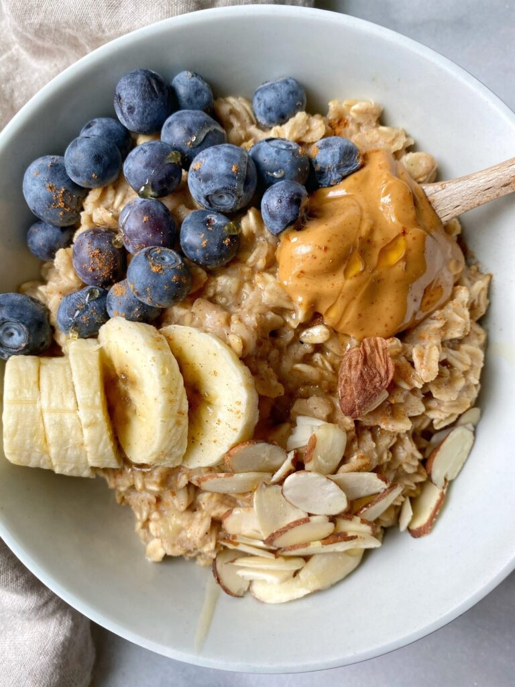

Oatmeal

Description
An easy and delicious breakfast, or lunch, I’m not the boss of you, that can be topped with almost anything you desire!
Ingredients
- 1/2 cup Rolled oats
- 1/2 cup Unsweetened vanilla almond milk (or any other milk
- 1/3 mashed Banana
- Cinnamon
- 1 tbsp Maple syrup
- Toppings: Banana, Blueberries, hemp seeds, almond butter. (or whatever you desire)
Steps
- Combine the rolled oats, nut milk on medium heat. Continually stir.
- Add in mashed banana.
- Stir continuously and add in maple syrup. Add in more sweetener to adjust to liking! Bring oats to a boil and continue to stir.
- Reduce heat and stir until oats thicken.
- Pour in bowl and top with desired toppings.